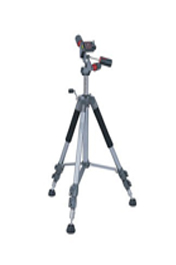
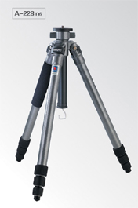
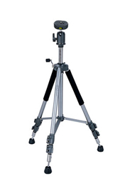

三脚架
360全景拍摄硬件配备-三脚架
三脚架的作用无论是对于业余用户还是专业用户都不可忽视的，他的主要作用就是能稳定照相机，以达到某些摄影效果。最常见的就是长曝光中使用三脚架，用户如果要拍摄夜景或者带涌动轨迹的图片的时候，曝光时间需要加大，这个时候，数码相机不能抖动，则需要三脚架的帮助。三脚架的选择也有很多，购买三脚架其实主要希望角架能为一些拍摄情况提供稳定的拍摄状态，不过有很多情况会导致三脚架产生不稳定，例如本身使用的是重量较轻的三脚架或所谓的便携式三脚架、在开启角架时出现不平衡或未上钮的情况，又或者在正式使用时过分拉高了中间的轴心杆等，都会使角架角晃动。【三角架对于拍摄全景的作用】
由于需要保证节点位置的不变，全景拍摄对稳定性的要求非常高，所以一个稳定的三脚架也很重要。 建议选择能承受一定重量且材料强度较高的三脚架,并且该三脚架必须支持云台的装卸，因为拍摄全景的时候必须使用到专用的全景云台，而不是家用的普通云台，所以云台的可装卸也是必须符合的。【三角架的分类】
三脚架按照材质分类可以分为木质、高强塑料材质，合金材料、钢铁材料、碳纤维等多种。最常见的材质是铝合金，铝合金材质的脚架的优点是重量轻，坚固。最新式的脚架则使用碳纤维材质制造，它具有比铝合金更好的韧性及重量更轻等优点，常背着脚架外出拍照的人对于脚架的重量都很重视，希望它能愈轻愈好。按最大脚管管径分类可分为32mm，28mm，25mm，22mm等，一般来讲，脚管越大，脚架的承重越大，稳定性越强。【微企推荐三脚架】
|  |

|
 |
| 伟峰6307 |
百诺A-228 n6
|
伟峰6305 |